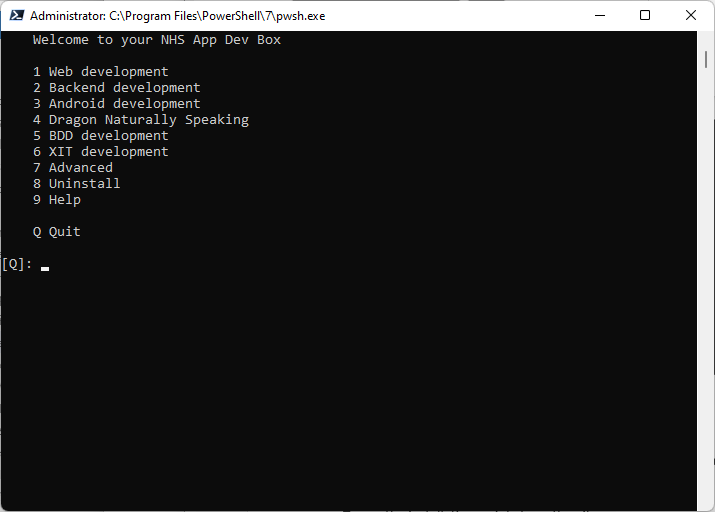
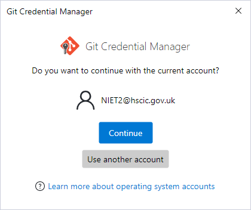

Troubleshooting
Welcome to your NHS App Dev Box.
When you login, the installation of WSL should start automatically. This will take about five minutes. Once it is complete, you should see this menu:

If you do not see this screen, start PowerShell in Administrator mode, and then run the command "nhsapp". This will run C:\provisioning\scripts\nhsapp.ps1
Log files can be found in C:\provisioning\log
Manual Installation
If nhsapp.ps1 has not been deployed or is not available, you can run the install it manually.
Start PowerShell as an administrator, and then run the following commands:
mkdir c:\repos
cd c:\repos
git clone https://nhsapp@dev.azure.com/nhsapp/NHS%20App/_git/nhsapp-dev-workstation
The Git Credential Manager will then start.

Click on continue.
cd nhsapp-dev-workstation\deploy-scripts\workstation1
.\p1.ps1